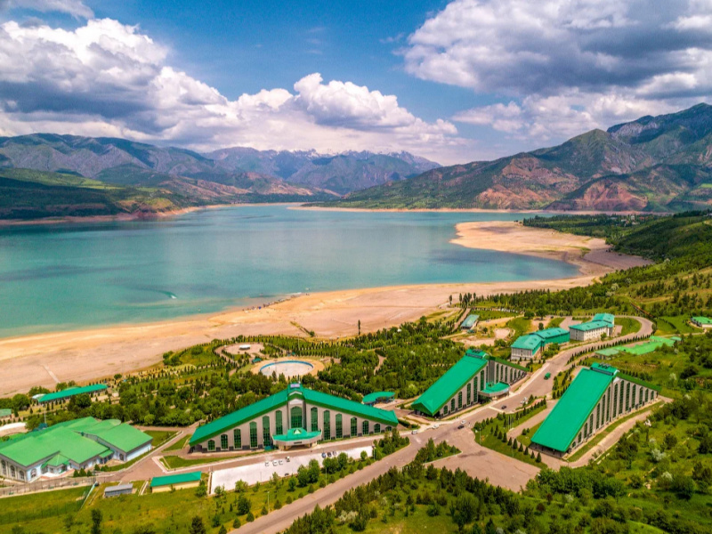
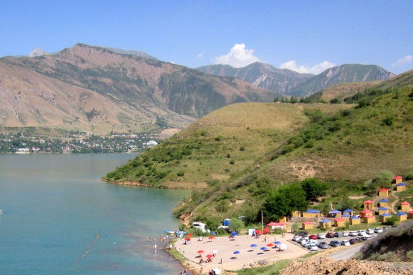
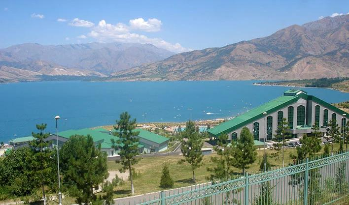
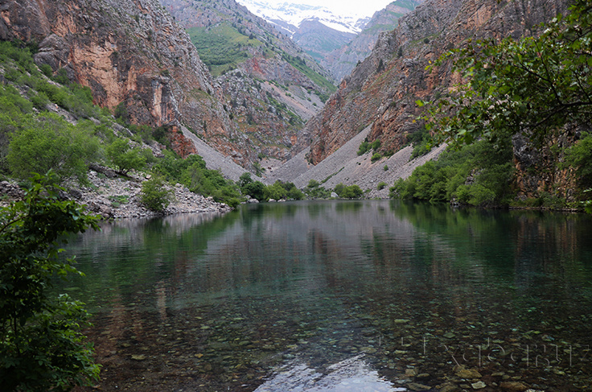

Boʻstonliq tumaniBo‘stonliq tumani — O‘zbekistonning Toshkent viloyatidagi eng so‘lim va turistik salohiyati yuqori bo‘lgan tumanlardan biri hisoblanadi.
asosan o‘zining tog‘li tabiati, dam olish maskanlari va suv havzalari bilan mashhur.
Umumiy ma’lumotlar Ma’muriy markazi: G‘azalkent shahri. Joylashuvi: Toshkent viloyatining shimoliy-sharqiy qismida, Tyan-Shan tog‘ tizmalari etagida joylashgan. Tabiati: Tuman hududidan Chirchiq daryosi va uning irmoqlari (Piskom, Chotqol, Ugom) oqib o‘tadi.




Audio:
Istalgan musiqalar: